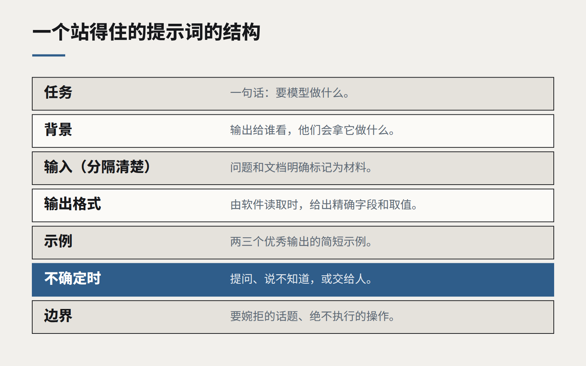

洞察
AI 与模型
像写规格说明一样写提示词
能在生产环境里站得住的提示词，读起来不像巧妙的咒语，而像写给一位新同事的清晰简报。把它们当代码对待：版本化、要评审、要测试。

有一段时间，写提示词被当成一门玄学：神奇的短语、全大写的警告、繁复的角色扮演，还有像菜谱一样口口相传的技巧。其中一些技巧在特定模型上确实管用过一阵子，但很少有能挺过模型升级的。
能在生产环境里站得住的提示词，看起来不一样。它们读起来像一份交给一位能干、但对你的业务一无所知的新同事的清晰简报：任务是什么、为谁而做、好的结果长什么样、不确定时怎么办。换句话说，它们读起来像一份规格说明。而它们也理应得到与任何其他驱动软件行为的规格说明同等的工程纪律。
好的提示词要说清楚什么
- 任务，一句话。 在一切之前，平白地说明要模型做什么。
- 背景。 输出是给谁看的，他们已经知道什么，会拿它来做什么。
- 输入，清晰分隔。 标出用户的问题、检索到的文档和其他数据从哪里开始、到哪里结束，让模型分得清哪些是指令、哪些是材料。
- 输出格式。 如果结果由软件读取，就给出精确结构——字段名、允许的取值、长度限制；如果由人阅读，就给出朴素的指引。
- 好的样子。 两三个优秀输出的简短示例，胜过几段形容词。
- 不确定时怎么办。 是提问、说不知道，还是把这个案例交给人。这一条指令，就能避免相当一部分自信的错误回答。
- 边界。 模型绝不能做什么：要婉拒的话题、永远不能执行的操作、永远不能透露的信息。

把提示词当代码
提示词是程序的一部分，改动它，就改变了对每一个用户的行为。所以：
- 把提示词放进版本控制，而不是放在某个看板或某个有人手动编辑的数据库字段里。每一次改动都有作者、日期和理由。
- 像评审代码一样评审改动。 第二位读者能发现作者自己看不到的歧义。
- 每次改动上线前都用评测集测试。 一个修好了一个用例、却弄坏了另外四个的微调，绝不应该到达用户面前。
- 用模板拼装，而不是字符串拼接。 用有名字的部分——指令、示例、检索上下文——来构建提示词，让每一部分都能独立修改和测试。
也为下一个模型而写
在不同模型之间迁移得最好的提示词，是技巧最少的那些。清晰的结构、明确的指令和好的示例，在不同供应商、不同代际的模型上都有效。针对特定模型的取巧，往往在你切换模型的那一刻就变成了负担。
一个有用的习惯，是把提示词大声读出来，就像在给一位新员工做交代。如果一个认真的人会感到困惑，模型大概也会——只是更安静地困惑着。如果一个认真的人能准确知道该做什么，你就写出了一份好的规格说明。
我们见过最好的提示词工程，和好的技术写作没有分别。
继续阅读
全部洞察